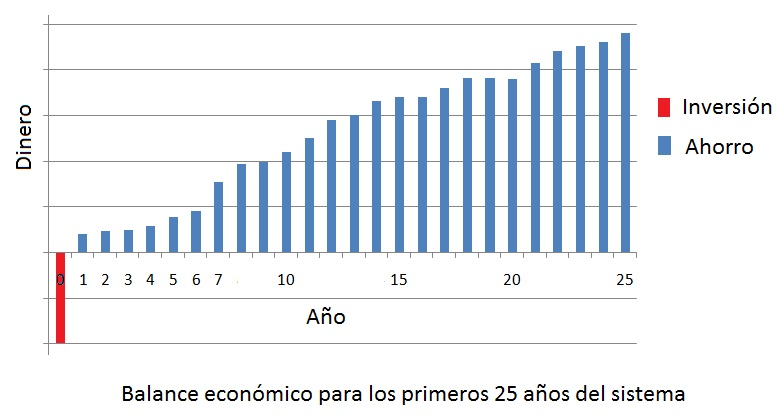

Preguntas Frecuentes
- ¿Es la energía solar realmente una buena inversión en Costa Rica? Si, a partir del 2016 a raíz de la nueva normativa de autoabastecimiento mediante energías renovables, los sistemas solares se convirtieron en una excelente inversión para la mayoría de abonados. Desde el primer mes de instalado y durante décadas, su sistema PROSOLAR le generará cada año más ahorros. Adicionalmente, gracias a su posición geográfica, Costa Rica tiene un potencial de radiación solar privilegiado a nivel mundial.
- ¿Cómo funciona un sistema de paneles solares interconectado a la red? Una vez instalado su sistema de paneles solares se procede a interconectarlo a la red eléctrica nacional a través un medidor bidireccional. Este medidor registra cuánta energía se consume y cuánta energía generan sus paneles. Al final del mes se descuenta de su recibo eléctrico la energía que generaron sus paneles. En caso de que sus paneles generen más de lo consumido este excedente puede utilizarlo en meses posteriores (en un periodo de un año). En caso de que consuma más de lo que generó esta diferencia se factura de manera usual. El departamento de Ingeniería de PROSOLAR se encarga de diseñar su sistema para que tenga un funcionamiento óptimo y le genere la mayor cantidad de ahorro según sus necesidades.
- ¿Cuál es la vida útil de los paneles solares? Debido a que en PROSOLAR trabajamos con los mejores paneles fotovoltaicos del mercado, la vida útil está estimada en más de 30 años. El fabricante ofrece una garantía de 25 años en la producción eléctrica y de 10 años en materiales.
- ¿Mi nueva factura eléctrica será de 0 colones? No, su factura eléctrica nunca será de 0 colones ya que se deben pagar impuestos, costo por uso de la red y excedentes en caso que consuma más energía de la que genera. Sin embargo, su factura se puede reducir hasta un 95% dependiendo de las condiciones de su consumo. Gracias al carácter modular de los sistemas fotovoltaicos el cliente puede escoger cuanto ahorrar dependiendo del tamaño del sistema que se instale; por ejemplo, se puede iniciar con un ahorro de un 50% y al tiempo añadir más paneles para aumentar el ahorro a un 90%.
- ¿En cuánto tiempo se recupera la inversión? La inversión de un sistema PROSOLAR se recupera usualmente entre 3 y 7 años después de instalado según las características de cada proyecto. Con PROSOLAR la inversión se recupera más rápido que con otras empresas debido a que utilizamos los paneles e inversores más eficientes, además que nuestros precios son justos y más atractivos que los de la gran mayoría de nuestros competidores.
- ¿Cuál es el mantenimiento necesario para un sistema fotovoltaico? Luego de la instalación, el mantenimiento necesario para su sistema de paneles solares es mínimo y sencillo. Debido a que el sistema no tiene partes móviles y que las células y conexiones están encapsuladas en capas de material protector, el mantenimiento se reduce a la limpieza del cristal y la verificación de conexiones y componentes. En PROSOLAR ofrecemos servicio de mantenimiento preventivo, lo recomendado son 1 o 2 veces por año.
- ¿Cuáles son los componentes de un sistema de paneles solares? Los dos componentes principales son los paneles solares y el inversor. Además, los sistemas incluyen la estructura de montaje, las protecciones, disyuntores, cables, conectores, cajas de unión y sistema de monitoreo.
- ¿Necesito baterías para mi sistema de paneles solares? No, salvo para casos donde no hay acceso a la red eléctrica (e.g. casas o cabañas muy alejadas) los sistemas fotovoltaicos no necesitan baterías ya que se procede a interconectar el sistema de generación con la red eléctrica nacional mediante un medidor bidireccional (mide la energía que tomamos y la que entregamos a la red). Por lo tanto el sistema usa la red eléctrica como una "batería gigante" en la que se almacenan los excedentes que se pueden retirar cuando se necesitan. Al no necesitar baterías el precio del sistema fotovoltaico se reduce significativamente por lo que se recupera la inversión inicial más rápido.
- ¿Pueden funcionar los paneles en días nublados? Si, los paneles fotovoltaicos generan electricidad incluso en los días nublados aunque su rendimiento disminuye en comparación a un día soleado.
- ¿Cuánto dura la instalación? El tiempo de instalación dependerá del tamaño del sistema. Generalmente se dura entre 2 y 4 días.
-
¿Cuáles son los trámites con la empresa distribuidora de electricidad? ¿Cuánto tiempo toma?
El primer paso es solicitar un estudio de viabilidad a la empresa distribuidora (e.g. ICE, CNFL, ESPH) en donde se determina si el sistema propuesto puede ser interconectado
a la red (esto dependerá de las condiciones del circuito ramal en su localidad), en la mayoría de los casos el resultado es positivo por lo que se procede a solicitar la interconexión.
Luego de instalado el sistema la empresa distribuidora verifica la instalación y realiza la interconexión con lo que su sistema empieza a funcionar y a producir ahorros.
El tiempo que toman estos trámites dependerá de la empresa distribuidora y puede variar entre días o algunas semanas para cada paso. PROSOLAR se encarga de gestionar estos trámites y se requiere solamente de su firma en los documentos a presentar.

